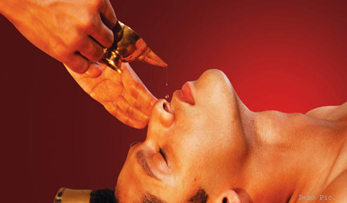
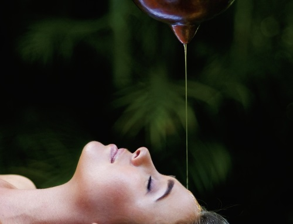

- होम
-
वेन्डर


आयुर्वेद तन, मन और आत्मा के बीच संतुलन बनाकर स्वास्थ्य में सुधार करता है। आयुर्वेद में न केवल उपचार होता है बल्कि यह जीवन जीने का ऐसा तरीका सिखाता है, जिससे जीवन लंबा और खुशहाल होता है। आयुर्वेद के अनुसार शरीर में वात, पित्त और कफ जैसे तीनों मूल तत्वों के संतुलन से कोई भी बीमारी आप तक नहीं आ सकती। लेकिन जब इनका संतुलन बिगड़ता है, तो बीमारी शरीर पर हावी होने लगती है और आयुर्वेद में इन्हीं तीनों तत्वों का संतुलन बनाया जाता है। साथ ही आयुर्वेद में रोग प्रतिरोधक क्षमता विकसित करने पर बल दिया जाता है ताकि किसी भी प्रकार का रोग न हो।
 आयुर्वेद में विभिन्न रोगों के इलाज के लिए हर्बल उपचार, घरेलू उपचार, आयुर्वेदिक दवाओं, आहार संशोधन, मालिश और ध्यान का उपयोग किया जाता है। आयुर्वेद क्या है, आयुर्वेद से विभिन्न रोगों को इलाज कैसे होता है, आयुर्वेद का इस्तेमाल कैसे किया जाता है, त्वचा के लिए आयुर्वेद कैसे काम करता है और आयुर्वेदिक औषधियां कौन-कौन सी हैं, इसके अलावा आयुर्वेद के बारे में संपूर्ण जानकारी के लिए इस केटेगरी को पढ़ें।
आयुर्वेद में विभिन्न रोगों के इलाज के लिए हर्बल उपचार, घरेलू उपचार, आयुर्वेदिक दवाओं, आहार संशोधन, मालिश और ध्यान का उपयोग किया जाता है। आयुर्वेद क्या है, आयुर्वेद से विभिन्न रोगों को इलाज कैसे होता है, आयुर्वेद का इस्तेमाल कैसे किया जाता है, त्वचा के लिए आयुर्वेद कैसे काम करता है और आयुर्वेदिक औषधियां कौन-कौन सी हैं, इसके अलावा आयुर्वेद के बारे में संपूर्ण जानकारी के लिए इस केटेगरी को पढ़ें।
पतंजलि आयुर्वेद ने सबसे पहले औषधियों के निर्माण से शुरुआत की थी। धीरे-धीरे पतंजलि आयुर्वेद खाने-पीने की चीजों से लेकर कांतिवर्धक उत्पादों का निर्माण भी करने लगी है। पतंजलि आयुर्वेद 45 तरह के कांतिवर्धक (cosmetics) उत्पाद बनाती है जिसमें सिर्फ 13 तरह के शरीर साफ़ करने के उत्पाद शामिल हैं, जैसे-शैंपू, साबुन, लिप बाम, स्किन क्रीम आदि। किराना के भी बहुत से उत्पादों का निर्माण पतंजलि आयुर्वेद द्वारा किया जाता है। यह कंपनी 30 अलग-अलग तरह के खाद्य पदार्थ तैयार करती है जैसे- सरसों तेल, आटा, घी, बिस्किट, मसाले, तेल, चीनी, जूस, शहद इत्यादि। दूसरी कंपनियों की तुलना में पतंजलि आयुर्वेद के उत्पाद सस्ते हैं।

एफ.एम.सी.जी. कंपनियों को कड़ी चुनौती देने के लिए पतंजलि आयुर्वेद हाल ही में टीवी पर अपने उत्पादों के विज्ञापन देने शुरू किए हैं। साल 2012 में करीब 150 से 200 के बीच रहने वाली पतंजलि के दुकानों की संख्या बढ़कर 6000 हो चुकी है। इतना ही नहीं पतंजलि आयुर्वेद के तमाम उत्पाद पतंजलि आयुर्वेद की आधिकारिक वेबसाइट पर ऑनलाइन भी बेचे जा रहे हैं।पतंजलि आयुर्वेद का च्यवनप्राश और सरसों का तेल आदि अब रिलायंस के रिटेल स्टोर में भी बिकने लगे हैं। देश भर के 400 स्टोर्स में पतंजलि आयुर्वेद के उत्पाद बिक रहे हैं जिसे 2015 के आखिर तक 1000000 स्टोर्स तक पहुंचाने की योजना है।
आयुर्वेद/Ayurveda एक दवाई या Medicine का System है जिसकी शुरुवातकई वर्षों पहले भारत में हुई थी। Ayurveda Medicines का पूरा रहस्य भारत के इतिहास से जुडा हुआ है। आज के दिन में विश्व भर के ज्यादातर आधुनिक और वैकल्पिक चिकित्सा, आयुर्वेद से लिया गया है। प्राचीन आयुर्वेद चिकित्सा की शुरुवात देवी-देवताओं के ग्रंथों से हुआ था और बाद में यह मानव चिकित्सा तक पहुंचा। सुश्रुत संहिता (Sushruta Samhita) में यह साफ़-साफ लिखा गया है कि धनवंतरी, ने किस प्रकार से वाराणसी के एक पौराणिक राजा के रूप में अवतार लिया और उसके बाद कुछ बुद्धिमान चिकित्सकों और खुद आचार्य सुश्रुत को भी दवाइयों के विषय में ज्ञान दिया।
आयुर्वेद के उपचार में ज्यादातर हर्बल चीजों का उपयोग होता है। ग्रंथों के अनुसार कुछ खनिज और धातु पदार्थ का भी उपयोग औषधि बनाने में किया जाता था। यहाँ तक की प्राचीन आयुर्वेद ग्रांटों से सर्जरी के कुछ तरीके भी सीखे गए हैं जैसे नासिकासंधान (Rhinoplasty), पेरिनिअल लिथोटोमी (Perineal Lithotomy), घावों की सिलाई (Wounds Suturing), आदि। वैसे तो आयुर्वेद के चिकित्सा को वैज्ञानिक तौर पे माना गया है पर इसे वैज्ञानिक तौर पर पालन ना किया जाने वाला चिकित्सा प्रणाली कहा जाता है। पर ऐसे भी बहित सारे शोधकर्ता हैं जो आयुर्वेदिक चिकित्सा को विज्ञानं से जुड़ा (Proto-Science) मानते हैं।
आयुर्वेद का शुरुवात अथर्व वेद से हुआ जो चार वेदों में से एक है जिसमें तरह-तरह के प्राचीन दवाइयों के विषय में जानकारी दी गयी है। यह बात अष्टांग अह्रिदयम Ashtanga Hridayam के प्रथम अध्याय में अयुर्वेदावातारना Ayurveda Vata Rna वग्भाता ने लिखा था जिसका मतलब है आयुर्वेद की उत्त्पति के विषय में बताया गया है। उसमें यह भी बताया गया है कि ब्रह्मा ने ही आयुर्वेद का ज्ञान प्रजापति को दिया।
आयुर्वेद का सही रूप में विकास संहिता दौर में शुरू हुआ जब चरक संहिता लिखा गया। यह आत्रेय और पुनर्वसु ने अपनी कक्षा में बात करते समय का प्रतिलिपि है। यह कहा जाता है चरक संहिता को 6 वे सदी ईसापूर्व में लिखा गया था जिसमे माना जाता है 300-600 ईसापूर्व के मध्य इसमें सर्जरी के विषय में भी लिखा गया था।
- रोग एवं उपचार
- ज्ञानधार
- संपर्क


पंचकर्म
पंचकर्म के प्रकार और उनके लाभ
वमन (उपचारात्मक उल्टी)
वमन के लाभ
विधि:- इस उपचार का प्रयोग तब किया जाता है जब फ़ेफड़े मे संकुलनता होती है जिसके कारण बार-बार श्वासनली-शोथ, खाँसी, ठंड या दमा के दौरे आते हैंI यह औषधियुक्त उल्टी चिकित्सा है जो शरीर एवं श्वास-नली में एकत्रित कफ (दोषों में से एक) विषों को दूर करता है। यह उन लोगों को दिया जाता है जिनमें उच्च कफ असंतुलन पाया जाता है। इस चिकित्सा का उद्देश्य आधिक्य कफ से छूटकारा पाने हेतु उल्टी के लिये प्रवृत्त कराना है। मुलैठी एवं मधु का बना हुआ एक पेय या पिच्छाक्ष के जड़ की चाय रोगी को दी जाती है। (अन्य प्रयुक्त पदार्थ नमक एवं इलायची) जीभ रगड़कर उल्टी के लिये प्रेरित किया जाता है। 4-8 उल्टी का लक्ष्य रहता है। उल्टी के बाद रोगी बहुत आराम महसूस करता है। शिरानाल की सफाई के साथ अधिकांश संकुलता, घरघराहट एवं श्वासहीनता गायब हो जाती है। उपचारात्मक उल्टी का प्रयोग खाँसी, ठंड, दमा के लक्षण, ज्वर,मिचली, भूख की कमी, रक्तहीनता, विषाक्तता, चर्म रोग, मधुमेह, लसीका के अवरोध, चिरकालिक अजीर्ण, शोफ (सूजन), मिर्गी (दौरे के दौरान), चिरकालिक शिरानाल की समस्या, चिरकालिक प्रत्यूर्जता, परागज ज्वर, श्वेत्कुष्ठ, त्वचा रोग, उच्च अम्लता, मोटापा, मनोवैज्ञानिक विकार एवं गल्तुण्डिका-शोथ के बार-बार होनेवाले दौरे आदि के लिये किया जाता है। वमन के बाद, विश्राम, निराहार रहने एवं स्वभाविक इच्छाएँ (अर्थात मूत्र त्याग, मलत्याग, वायु विकार, छींक, खाँसी) को नहीं दबाने की सलाह दी जाती है। यदि वमन का उचित ढ़ंग से प्रयोग किया जाता है, तो व्यक्ति को फ़ेंफड़े में आराम महसूस करेगा, मुक्त होकर श्वास ले पायेगा, सीने में हल्कापन, स्वच्छ विचार, एक स्पष्ट आवाज, एक अच्छी भूख होगी, एवं संकुलता के सभी लक्षण समाप्त हो जायेंगे।
बस्ती(एनीमा)

बस्ती(एनीमा) के लाभ
विधि:- बस्ती(एनीमा) सभी पंचकर्म उपचार की जननी है क्योंकि यह सभी 3 दोषों, वात, पित्त एवं कफ द्वारा एकत्रित जीवविषों को मलाशय से बाहर निकालता है। औषधियुक्त एनीमा का प्रयोग विभिन्न विशेष कारणों के लिये किया जाता है। सामान्य रूप से, इस उपचार का प्रयोग आँत नली से ढ़ीले दोषों को साफ करने के लिये किया जाता है। आयुर्वेद में सूचीबद्ध लगभग 100 विशेष एनीमा हैं। वस्तिकर्म के अन्तर्गत औषधियुक्त पदार्थों जैसे कि तिल का तेल, पिच्छाक्ष का तेल या अन्य जड़ीयुक्त काढ़ा का एक द्रव माध्यम के द्वारा मलाशय में प्रयोग करना है। वस्ति वात विकार का सबसे प्रभावकारी उपचार है। यह सूजन, चिरकालिक ज्वर, साधारण जुकाम, यौन रोग, गुर्दे में पत्थर, हृदय पीड़ा, उल्टी, पीठ-दर्द, गर्दन-दर्द, उच्च अम्लता, आंशिक पक्षाघात, शरीर के निचले हिस्से में पक्षघात, बृहदांत्र-शोथ, स्वास्थ्यलाभ, ग्रैव स्पॉन्डिलोसिस, उद्दीप्य आन्त्र सहलक्षण, कब्ज, पाचन विकार, यकृत में वृद्धि, प्लीहा में वृद्धि, मोटापा, बवासीर, जनन-अक्षमता, साइटिका एवं जोड़ों के अन्य दर्द को कम करता है। अनेक अन्य वात विकार जैसे कि संधिशोथ, आमवात, गठिया, मांशपेशियों में ऐंठन एवं सिरदर्द का भी उपचार वस्ति के द्वारा हो सकता है। आयुर्वेद में वात से संबंधित लगभग 80 विकार है। उनमे से लभग 80 प्रतिशत का उपचार औषधियुक्त एनीमा के प्रयोग के द्वारा किया जा सकता है। वात मुख्य रूप से बड़ी आँत में स्थित है, लेकिन अस्थि ऊतक भी वात के स्थान हैंI इसलिये गुदा (मलाशय) के द्वारा औषधि का प्रयोग अस्थि ऊतक को प्रभावित करता है। मलाशय की श्लेषमा झिल्ली अस्थि के बाह्य आवरण से संबंधित है जो अस्थियों का पोषण करती है। इसलिये गुदा से किसी भी औषधि का प्रयोग करने पर वह गहरे ऊतकों जैसे कि अस्थियों में जाती हैं एवं वात विकार को दूर करती है
नास्य (नाक की सफाई)
नास्य (नाक की सफाई) के लाभ
विधि:-नाक मस्तिष्क का द्वारमार्ग है और यह चेतना का भी द्वारमार्ग है। नाक के द्वारा औषधि का प्रयोग नास्य कहलाता है। शिरानाल,गला, नाक या सिर के हिस्सों में शरीरी द्रव के आधिक्य को निकटतम संभव छिद्र नाक के माध्यम से निकाल दिया जाता है। तंत्रिका ऊर्जा के रूप में जीवन शक्ति, प्राण, नाक द्वारा अंदर लिये गये साँस से शरीर में प्रवेश करता है। प्राण मस्तिष्क में रहता है एवं संवेदक तथा प्रेरक पेशी को कायम रखता है। प्राण मानसिक क्रिया-कलापों, स्मरण, ध्यान एवं बौद्धिक क्रियाओं को भी संचालित करता है। असंतुलित प्राण इन सभी क्रियाओं में अपूर्ण कार्य उत्पन्न करता है एवं सिरदर्द, ऐंठन, स्मरणहीनता एवं लघुकृत संवेदक अवबोधन पैदा करता है। नास्य के अन्तर्गत सिर तथा गर्दन के हिस्सों में जमा हुये कफ जीवविष को साफ करने के लिये औषधियुक्त तेल का नाक से होकर प्रयोग किया जाता है। इसके अन्तर्गत उबलते हुये पानी में भिंगोये हुये औषधियुक्त जड़ी-बूटियों से निकलने वाले भाप को अंदर साँस लेना भी शामिल है। व्यक्ति की चिकित्सा स्थिति के आधार पर नास्य के के द्वारा त्रिशाखी तंत्रिकाशूल, बेल का पक्षाघात, स्मरण एवं दृष्टिशक्ति में सुधार, अनिद्रा, चेहरे में से आधिक्य अति रंजकतायुक्त श्लेष्मा की समाप्ति, समय से पूर्व बाल पकना, आवाज में स्पष्टता, विभिन्न कारणों से उत्पन्न होने वाले सिरदर्द, आंशिक पक्षाघात, गन्ध एवं स्वाद में कमी, नाक का सूखना, कर्कशता, अकड़ा हुआ कंधा, अधकपारी, गर्दन का कड़ापन, नासीय प्रत्यूर्जता, नासीय पुर्वंगक, तंत्रिका संबंधी दुष्क्रिया, शरीर के निचले हिस्से में पक्षाघात, शिरानालशोथ के उपचार में लाभ शामिल हैं। नास्य के द्वारा श्वसन क्रिया में भी सुधार लाया जा सकता है। नास्य के द्वारा श्वसन मार्ग में अवरूद्ध भावनाओं को मुक्त किया जायेगा। यह उपचार भावनाओं को खोलने में मदद करेगाI भावनाओं के मुक्त होने से श्वसन पद्धति भी बदल जायेगी।
रक्त मोक्षण (रक्त बहने देना)
रक्त मोक्षण (रक्त बहने देना) के लाभ
विधि:- रक्त बहने देने का प्रयोग जठरांत्र पथ के द्वारा रक्तप्रवाह में अवशोषित जीवविष को बाहर निकालने के लिये किया जाता है। जठरांत्र पथ में मौजूद जीवविष रक्त में अवशोषित हो जाते हैं एवं संपूर्ण शरीर में उनका परिसंचरण होता है। बार-बार होने वाले संक्रमण, उच्च तनाव एवं कुछ अन्य परिसंचरणात्मक स्थितियों का यह एक मूल कारण है। इसके अन्तर्गत बारंबार होने वाले चर्म रोगों के हमले जैसे कि पित्ती, फुन्सी, विसर्पिका, खाज, मुँहासे, खुजली, श्वेत कुष्ठ, चिरकालिक खुजलाहट या शीतपित्त शामिल हैं। इन स्थितियों में, आंतरिक औषधि के साथ-साथ जीवविष का निष्कासन एवं रक्त का शुद्धिकरण आवश्यक है। रक्त को बहाना विवर्द्धित यकृत, प्लीहा एवं गठिया की स्थितियों के लिये भी बताया जाता है। यकृत में असंगठित लाल रक्त कोशिकाओं के द्वारा पित्त तैयार होता हैI पित्त एवम रक्त का एक घनिष्ठ संबंध है। रक्त मोक्षण प्रक्रिया रक्त को शुद्ध करती है। रक्त को को बहाना प्लीहा को जिवविषरोधी पदार्थ उत्पन्न करने के लिये भी उत्तेजित करता है जिससे जो हमारे प्रतिरक्षी तंत्र को उत्तेजित करने में मदद करता है।जीवविष को निष्प्रभावित किया जाता है जिससे कई रक्तजनित बीमारियों का मूल उपचार संभव होता है। कुछ पदार्थ जैसे कि चीनी, नमक, खमीरयुक्त दही, खट्टे स्वाद वाले खाद पदार्थ एवं अल्कोहल रक्त के लिये जीवविष हैं। कुछ रक्त की बीमारियों में रक्त को शुद्ध रखने के लिये इन पदार्थों से परहेज करना चाहिये। रक्त मोक्षण प्रक्रिया रक्त साफ करने के लिये है एवं केवल असामान्य स्थितियों में ही सुझाया जाती है। सामान्य पन्चकर्म के दौरान इसकी सलाह नहीं दी जाती है। अधिकांश आयुर्वेद केन्द्र रक्त की सफाई में संक्रमण के अत्यधिक खतरे के कारण रक्त मोक्षण नहीं प्रदान करते हैं। हमारे योग पाठ्यक्रम में यह पंचकर्म कार्यक्रम का हिस्सा भी नहीं होगा।
शिरोधारा
शिरोधारा के लाभ
विधि:- शिरो का अर्थ है, सिर औत धारा का अर्थ है, प्रवाह। शिरोधरा को आयुर्वेद की सभी चिकित्साओं में सबसे उपयोगी माना गया है। यह एक प्राचीन आरोग्य विधि है जिसे भारत में लगभग 5,000 वर्षों से प्रयोग किया जा रहा है। विश्रांति की अदभुत प्रक्रिया में व्यक्ति के सिर की त्वचा तथा मस्तक पर गुनगुने औषधीय तेल की एक पतली सी धार प्रवाहित की जाती है। शिरोधारा से अत्यंत शांति मिलती है, साथ ही यह आपको यौवन प्रदान करती है और आपके केंद्रीय तंत्रिका तंत्र (सेंट्रल नर्वस सिस्टम) की कार्यप्रणाली को सुधारती है। इसका प्रयोग बहुत सी परिस्थितियों में किया जा सकता है- जैसे कि आँखों के रोग, सायनासाइटिस और स्मृति लोप। यह एक अत्यंत दैवीय चिकित्सा विधि है, जो कि आपके शरीर के अंर्तज्ञान जागृत करने में मदद करती है। आयुर्वेद के अनुसार, वात एवं पित्त के असंतुलन से पीड़ित व्यक्तियों के लिए शिरोधारा अत्यधिक लाभदायक है। जब वात असंतुलित होता है तो व्यक्ति में भय, असुरक्षा की भावना, चिंता या पलायनवादी विचार जैसे लक्षण दिखाई देते हैं और जब पित्त असंतुलित होता है तो व्यक्ति में क्रोध, चिड़चिड़ाहट, कुण्ठा और गलत निर्णय लेना आदि लक्षण दिखाई देने लगते हैं। शिरोधारा में प्रयोग किए जाने वाले तरल पदार्थ की विधि तथा गुण मनुष्य के शरीर के दोषों को संतुलित करते हैं। शिरोधारा का द्रव व्यक्ति के मस्तिष्क, सिर की त्वचा तथा तंत्रिका तंत्र को आराम तथा पोषण प्रदान करता है तथा दोषों को संतुलित करता है। आयुर्वेद संस्थान के जर्नल “आयुर्वेद टुडे” के 1995 के बसंत ऋतु अंक में आयुर्वेदिक प्रेक्टिशनर श्री एड दनहर बताते हैं कि तनाव को कम करने में शिरोधारा किस प्रकार से प्रभावशाली (कारगर) रहती है।